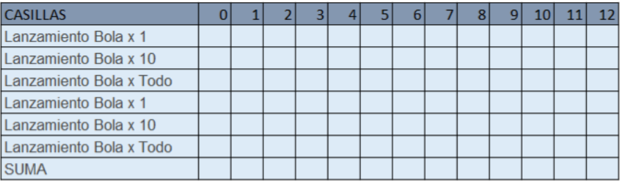

Instrucciones para la Simulación:
- Cada equipo ingresará al simulador de Plinko en PhET Colorado.
- Comenzarán soltando 6 bolas en Bola x 1 pelota desde una posición central en la parte superior del tablero y observarán en cuál de los contenedores termina y estos datos se registraran en una tabla de frecuencia.
- Realizaran el mismo procedimiento 6 veces pero ahora en la opción de Bola x 10, de igual forma realizarán el registro de los datos.
- Nuevamente ejecutarán la simulación pero ahora en la opción de Bolo x 100, y realizarám el regitro.
- Repetir el proceso apartir del paso 2 a 3.
- Realiza tus registros en la tabla para que puedas realizar la actividad de desarrollo.

Realiza tus registros en la tabla para que puedas realizar la actividad de desarrollo. Puedes trabajar en la siguiente hoja de cálculo Dar clic aqui